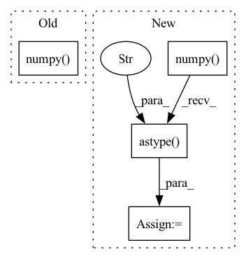

Pattern ID :9719
Before Change
def forward(ctx, input, mol):
ctx.save_for_backward(input)
ctx.mol = mol
output = [mol.eval_gto("GTOval_sph",p.detach().numpy() ) for p in input]
return torch.tensor(output,requires_grad=True)
@staticmethodAfter Change
def forward(ctx, input, mol):
ctx.save_for_backward(input)
ctx.mol = mol
pos = input.detach().numpy() .astype("float64" )
output = [mol.eval_gto("GTOval_sph",p) for p in pos]
return torch.tensor(output,requires_grad=True)
In pattern: SUPERPATTERN
Frequency: 4
Non-data size: 4
Instances Fragment ID: 34900292
Project Name: nlesc-jcer/qmctorch
Commit Name: a3b2285e8153b66f9b42395f24162fd8c6c82c76
Time: 2019-05-14
Author: nicolas.gm.renaud@gmail.com
File Name: pyCHAMP/wavefunction/neural_pyscf_wf_base.py
M Class Name: AOFunction
N Class Name: AOFunction
M Method Name: forward(3)
N Method Name: forward(3)
M Parent Class: torch.autograd.Function
N Parent Class: torch.autograd.Function
M File Name: pyCHAMP/wavefunction/neural_pyscf_wf_base.py
N File Name: pyCHAMP/wavefunction/neural_pyscf_wf_base.py
M Start Line: 241
M End Line: 241
N Start Line: 296
N End Line: 297
Before Change
prediction = prediction.detach().cpu()
down_pred = self.down_scale(prediction.unsqueeze(1))
down_target = self.down_scale(target.unsqueeze(1))
down_target = down_target.cpu().numpy() //[6, 1, 7, 128, 128]
// print(down_pred.size())
prediction[prediction>=0.5] = 1.0After Change
scale4_pred[scale4_pred>=0.5] = 1.0
scale4_pred[scale4_pred<0.5] = 0.0
scale4_pred = scale4_pred.numpy()
//// juexiao
// print("prediction", prediction.shape)
// target[target>0.5] = 1.0
// target[target<=0.5] = 0.0
target = target.cpu().numpy()
scale2_target = scale2_target.cpu().numpy() //[6, 1, 7, 128, 128]
scale4_target = scale4_target.cpu().numpy() //[6, 1, 4, 64, 64]
// print("target", target.shape)
// print("scale 2 target", scale2_target.shape)
// print("scale 4 target", scale4_target.shape)
prediction = prediction.reshape(-1).astype("int64")
target = target.reshape(-1).astype("int64")
scale2_pred = scale2_pred.reshape(-1).astype("int64")
scale2_target = scale2_target.reshape(-1).astype("int64")
scale4_pred = scale4_pred.reshape(-1).astype("int64" )
scale4_target = scale4_target.reshape(-1).astype("int64")
self.evaluator["1"].addBatch(prediction, target)
self.evaluator["2"].addBatch(scale2_pred, scale2_target)
self.evaluator["4"].addBatch(scale4_pred, scale4_target) Fragment ID: 34900293
Project Name: coperception/star
Commit Name: 6a0409967e276127415af7e0a80fe34de9f445cc
Time: 2022-06-13
Author: 954742885@qq.com
File Name: coperception/utils/metrics.py
M Class Name: Metrics
N Class Name: Metrics
M Method Name: add_batch(3)
N Method Name: add_batch(3)
M Parent Class:
N Parent Class:
M File Name: coperception/utils/metrics.py
N File Name: coperception/utils/metrics.py
M Start Line: 152
M End Line: 178
N Start Line: 153
N End Line: 190
Before Change
@staticmethod
def backward(ctx, grad_output):
input = ctx.saved_tensors[0]
deriv_ao = torch.tensor([ctx.mol.eval_gto("GTOval_ip_sph",p.detach().numpy() ) for p in input])
out = torch.zeros(input.shape)
for k in range(3):After Change
@staticmethod
def backward(ctx, grad_output):
input = ctx.saved_tensors[0]
pos = input.detach().numpy() .astype("float64" )
deriv_ao = torch.tensor([ctx.mol.eval_gto("GTOval_ip_sph",p) for p in pos])
print("GRAD OUT\n", grad_output)
print("DERIV AO\n", deriv_ao.shape)
Fragment ID: 34900295
Project Name: nlesc-jcer/qmctorch
Commit Name: a3b2285e8153b66f9b42395f24162fd8c6c82c76
Time: 2019-05-14
Author: nicolas.gm.renaud@gmail.com
File Name: pyCHAMP/wavefunction/neural_pyscf_wf_base.py
M Class Name: AOFunction
N Class Name: AOFunction
M Method Name: backward(2)
N Method Name: backward(2)
M Parent Class: torch.autograd.Function
N Parent Class: torch.autograd.Function
M File Name: pyCHAMP/wavefunction/neural_pyscf_wf_base.py
N File Name: pyCHAMP/wavefunction/neural_pyscf_wf_base.py
M Start Line: 246
M End Line: 251
N Start Line: 302
N End Line: 311
Before Change
"""
// scaled_x = (torch.clamp(x, -1, 1) + 1) * 255 / 2
scaled_x = torch.clamp(x, 0, 1) * 255 // from [0., 1.]
return scaled_x.cpu().numpy() .astype("uint8")
After Change
x = x / (max_val - min_val) // ~[0, 1]
x = x * 255. // ~[0, 255]
x = torch.clamp(x, 0., 255.)
x = x.cpu().numpy() .astype("uint8" ) .transpose(permutation)
return x
Fragment ID: 34900291
Project Name: ais-bonn/vp-suite
Commit Name: d2bf29df71add95ee00718db88df2cc1bb9624a5
Time: 2021-12-21
Author: boltres@ais.uni-bonn.de
File Name: vp_suite/dataset/dataset_utils.py
M Class Name: AnonimousClass
N Class Name: AnonimousClass
M Method Name: postprocess_img(3)
N Method Name: postprocess_img(1)
M Parent Class:
N Parent Class:
M File Name: vp_suite/dataset/dataset_utils.py
N File Name: vp_suite/dataset/dataset_utils.py
M Start Line: 12
M End Line: 18
N Start Line: 16
N End Line: 28